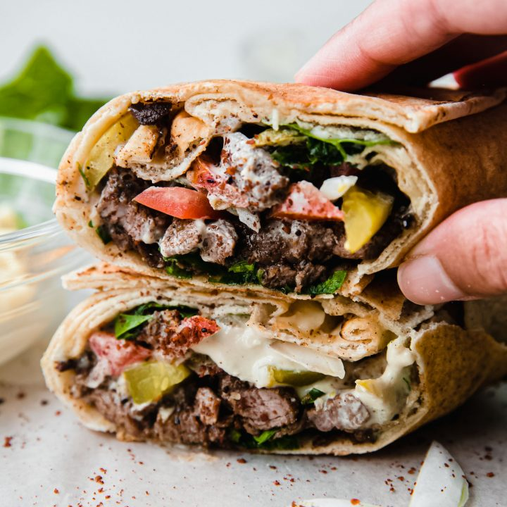

Shawarma

Description
Shawarma is a popular Middle Eastern dish made of marinated meat (usually lamb, beef, or chicken) that is slow-cooked on a vertical rotisserie. The meat is thinly sliced and served in pita bread or flatbreads with various toppings such as garlic sauce, pickles, tomatoes, and lettuce. Known for its rich, spiced flavor and tender texture, shawarma is a beloved street food across the Middle East, Mediterranean, and beyond.
Ingredients
For marinade:
-
2 lbs chicken thighs or beef/lamb (cut into strips)
-
4 cloves garlic, minced
-
1/4 cup plain yogurt
-
2 tablespoons olive oil
-
1 teaspoon ground cumin
-
1 teaspoon ground paprika
-
1 teaspoon ground turmeric
-
1 teaspoon ground coriander
-
1 teaspoon ground cinnamon
-
1 tablespoon lemon juice
-
1 teaspoon salt
-
1/2 teaspoon black pepper
-
1/4 teaspoon cayenne pepper (optional for heat)
For shawarma:
-
Pita bread or flatbread (for wrapping)
-
Sliced tomatoes
-
Pickles (cucumbers or turnips)
-
Shredded lettuce or cabbage
-
Tahini sauce or garlic sauce (for dressing)
Steps to make it:
-
Marinate the Meat:In a large bowl, mix the minced garlic, yogurt, olive oil, cumin, paprika, turmeric, coriander, cinnamon, lemon juice, salt, pepper, and cayenne pepper (if using). Add the chicken or beef/lamb strips and coat them evenly with the marinade. Cover the bowl and refrigerate for at least 1 hour (or overnight for deeper flavor).
-
Cook the Meat:Heat a grill, grill pan, or skillet over medium-high heat. Cook the marinated meat in batches, turning occasionally to ensure even cooking. Grill the meat for 5-7 minutes on each side or until cooked through and slightly crispy on the edges. Alternatively, if you have a rotisserie, you can cook it on the vertical spit, rotating as it cooks for a more traditional preparation.
-
Prepare the Shawarma Wrap:While the meat is cooking, prepare your toppings. Slice tomatoes, chop the lettuce or cabbage, and prepare the pickles. You can also warm the pita or flatbreads.
-
Assemble the Shawarma:
Once the meat is cooked, thinly slice it. Place the warm pita bread on a plate, and layer it with the cooked shawarma meat. Add your desired toppings: tomatoes, pickles, lettuce, and drizzle with tahini or garlic sauce.
-
Serve:
Roll up the pita or flatbread around the fillings to create your shawarma wrap. Serve with extra sauce on the side if desired, and enjoy your homemade shawarma!
Home